For Rebecca 💕 Baby #2 arriving March 2026
Welcome back to the newborn world. You've done this before, which means you know just enough to be dangerous — and just enough to have forgotten the details.
This curriculum is your refresher. Not generic fluff, but the specific things that matter when you're juggling a 3.5-year-old named Ethan while recovering from birth and keeping a tiny human alive.
Click any module to expand. The floating hearts at the bottom jump to each section. You've got this. 🌸
You don't need half of what the internet tells you. Here's what actually matters:
Pack the bag at 36 weeks. Not "soon" — literally week 36. Put it by the door with the car seat.
Here's what matters: Preparing vs. Perfecting. Preparing means having the essentials ready and a loose plan. Perfecting means researching the "best" option for 3 hours when any option works. One gives you confidence. The other steals your energy before baby even arrives.
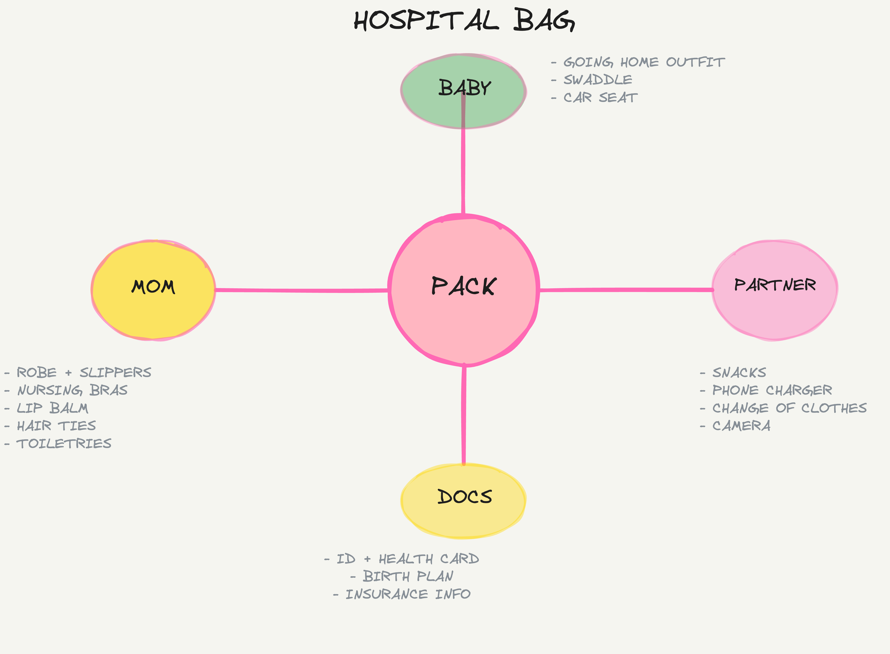
At 3.5, Ethan understands more than he can process emotionally. The goal isn't to make him "ready" — it's to make change feel less sudden.
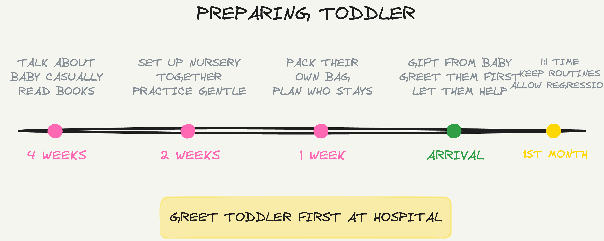
When you come home, have Andrew carry the baby in. You greet Ethan with empty arms and full attention first.
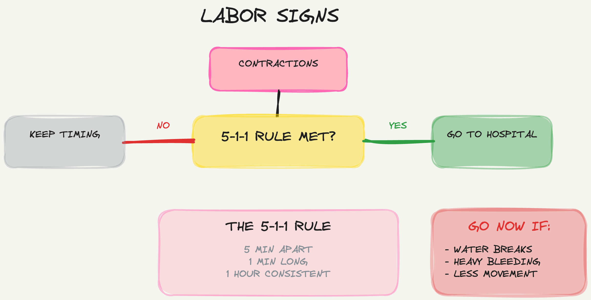
Second babies often come faster. Don't wait as long as you did with Ethan.
Call or go immediately if: Water breaks and fluid is green/brown, heavy bleeding (soaking a pad in an hour), baby isn't moving, severe headache with vision changes, contractions 3-4 minutes apart for an hour.
Here's the reframe: Birth Plan vs. Birth Preferences. A birth plan implies control over something you can't control. Birth preferences acknowledge what you'd like while staying open to what happens. One sets you up for disappointment. The other sets you up for presence.
If you want an epidural, ask early. Anesthesiologists get busy, and once you're at 8cm it might be too late.
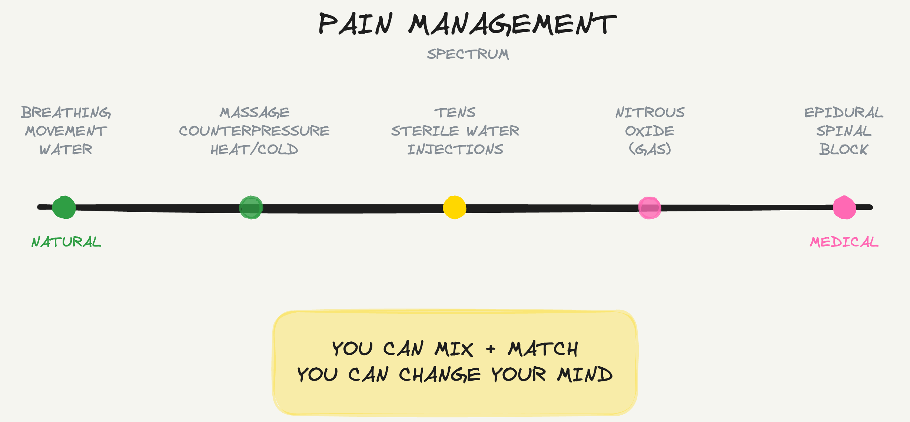
Even with a vaginal delivery last time, C-sections happen. Here's what to know:
Remember: Healing vs. Bouncing Back. "Bouncing back" implies your pre-baby body was better and you need to return to it. Healing honors that you created life and your body needs time, grace, and nourishment. One creates pressure. The other creates space.
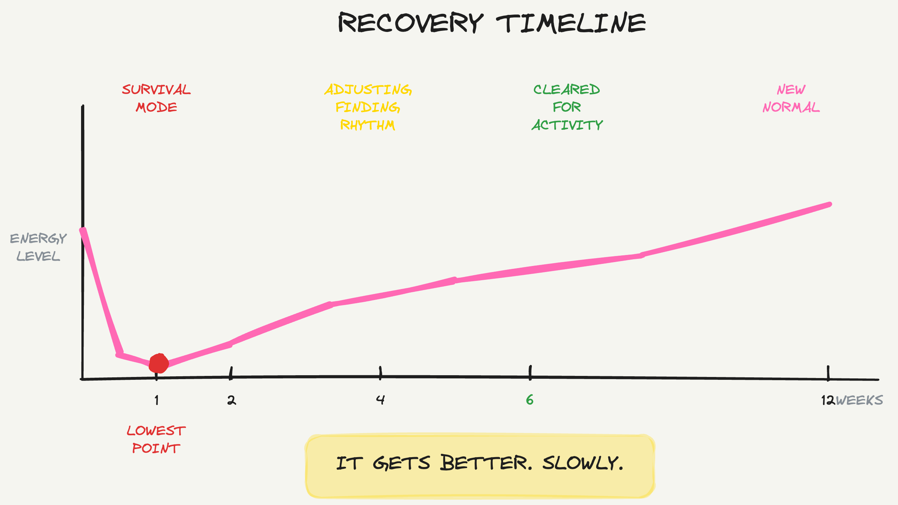
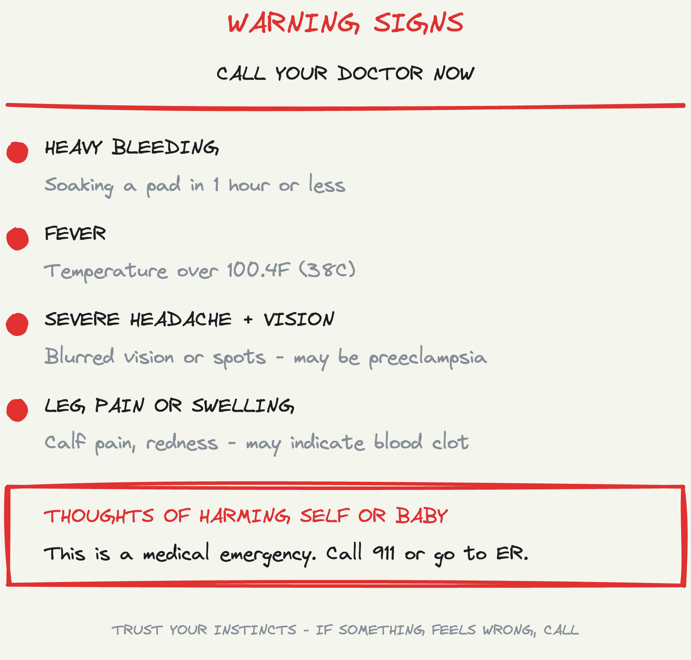
The peri bottle is your best friend. Fill with warm water, spray while peeing to dilute the sting, pat dry gently. Hospital provides one — take it home.
Postpartum depression/anxiety is NOT just "baby blues." If crying doesn't stop after 2 weeks, if you feel detached from baby, if you have scary thoughts about harming yourself or baby, if anxiety is constant — tell someone immediately. Your OB, midwife, or go to emerg.
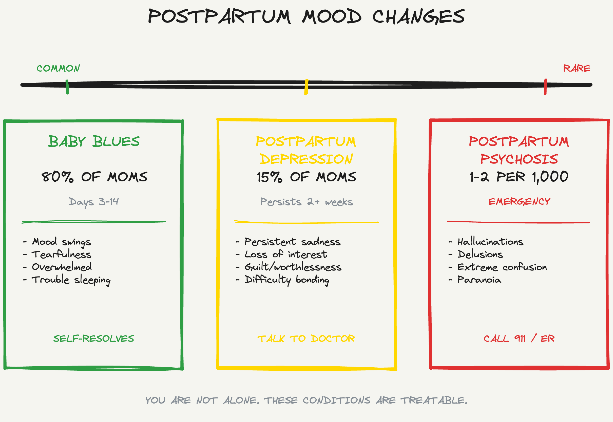
Go to ER or call your provider immediately for:
A 20-minute nap actually helps. You don't need a full sleep cycle to feel human again.
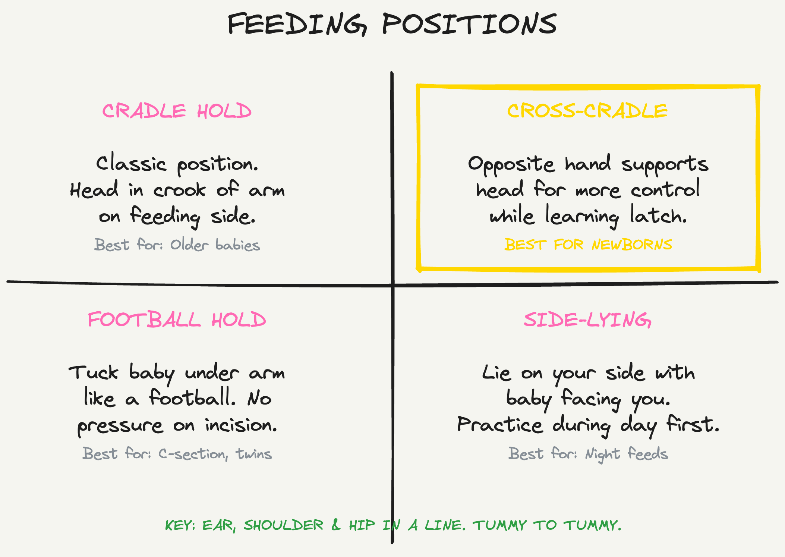
Pain beyond initial latch = something's wrong. Don't suffer. Ask for a lactation consultant at the hospital before discharge.
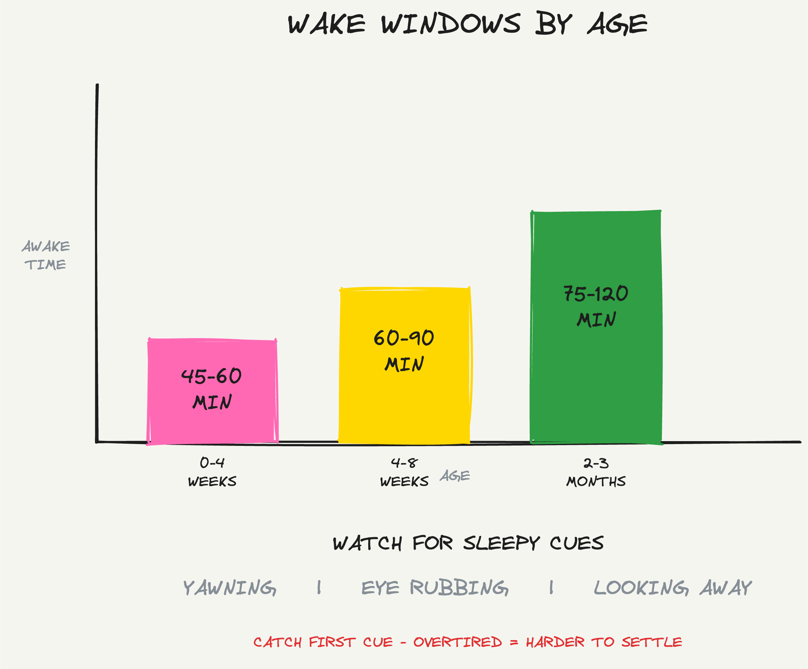
Boys will pee on you. Cover that thing immediately when the diaper comes off. You will forget. You will get peed on anyway.
Newborns cry 2-3 hours per day on average. Peak fussiness is around 6 weeks, then it gets better.
The key distinction: Responding vs. Reacting. Reacting is frantic energy — "Why won't they stop crying?!" Responding is calm presence — "You're telling me something. Let me figure it out." The baby feels both. One escalates. The other soothes.
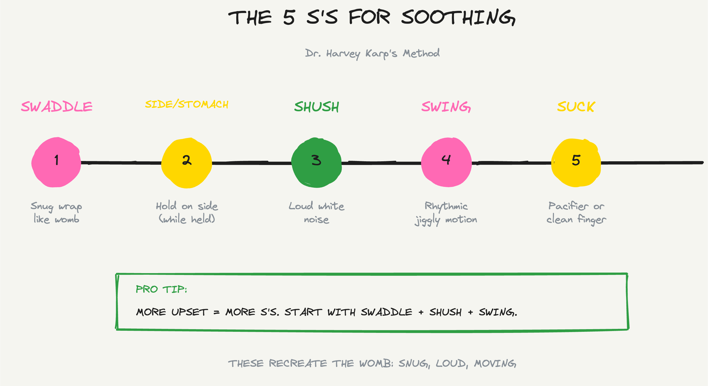
Under 3 months + fever = go to ER. Do not wait. Do not pass go. Call on the way.
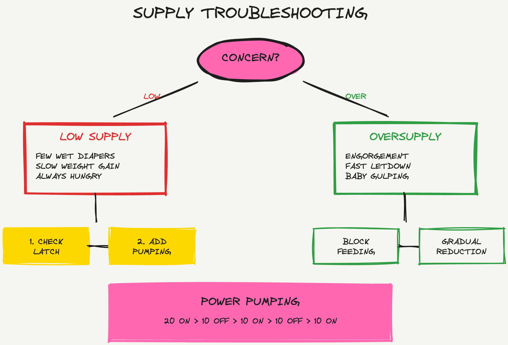
If breastfeeding isn't working and it's destroying your mental health, formula is not failure. A fed baby and a functioning mother matter more than method.
This matters: Fed vs. "Fed the Right Way". "Fed the right way" is a judgment disguised as advice. Fed is the only thing that matters. Breast, bottle, combo — a nourished baby with a mentally healthy mom wins every time.
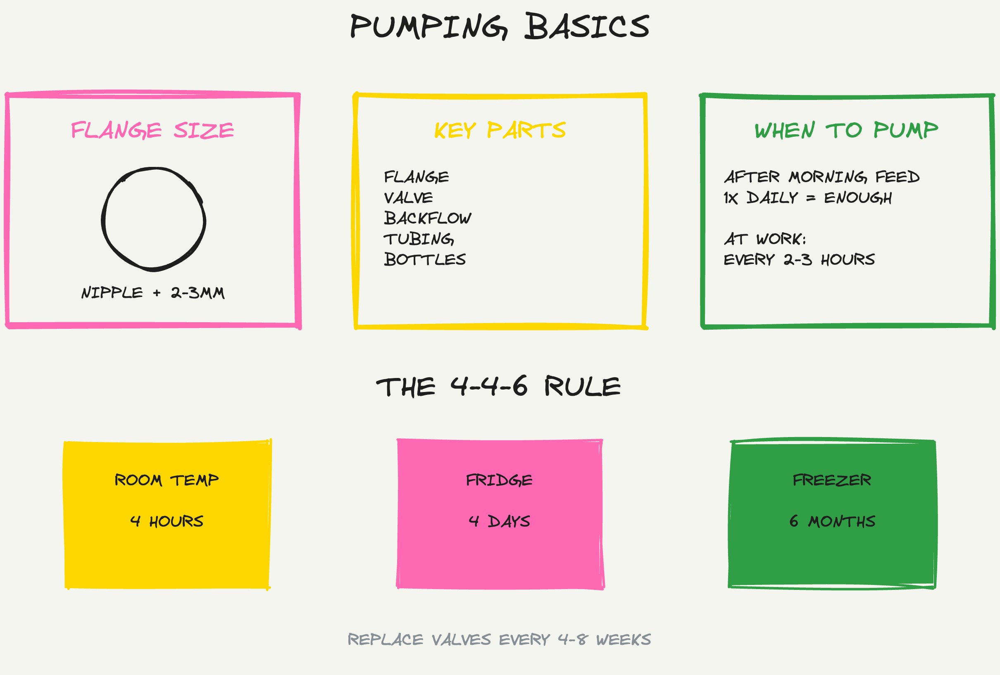
Never water down formula to make it last longer. This is dangerous — babies need exact concentrations for proper nutrition.
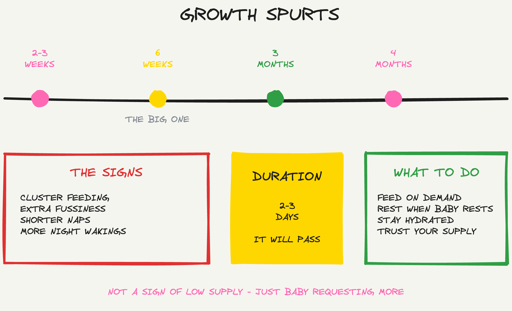
Ethan's world just got rocked. Regression is how toddlers cope with big feelings they can't express. Expect it.
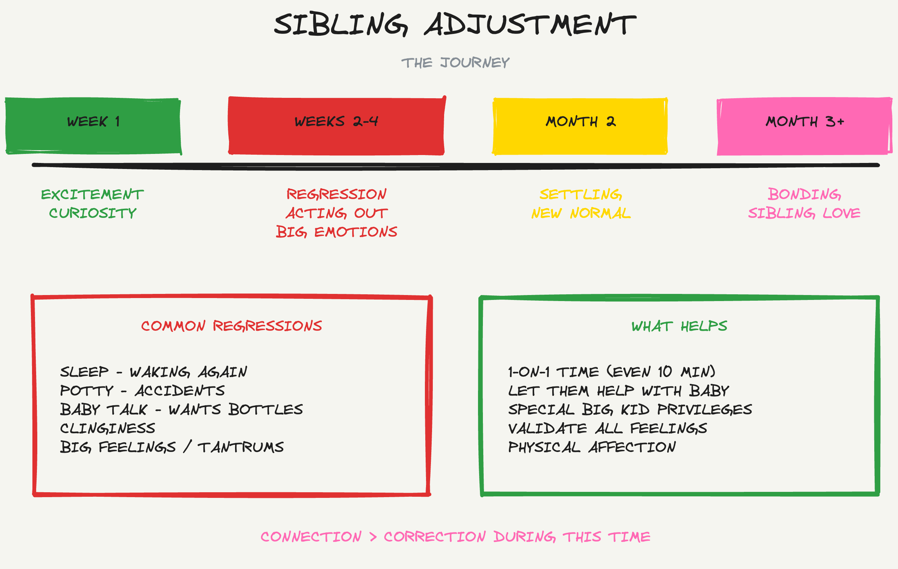
The behavior is not the problem — it's the symptom. When Ethan acts out, he's saying "I need reassurance that you still love me." Give him that reassurance.
The distinction that saves your sanity: Fair vs. Equal. Equal means giving both kids the same thing. Fair means giving each kid what they need. A 3-year-old and a newborn don't need equal time — they need appropriate attention. That's fair.
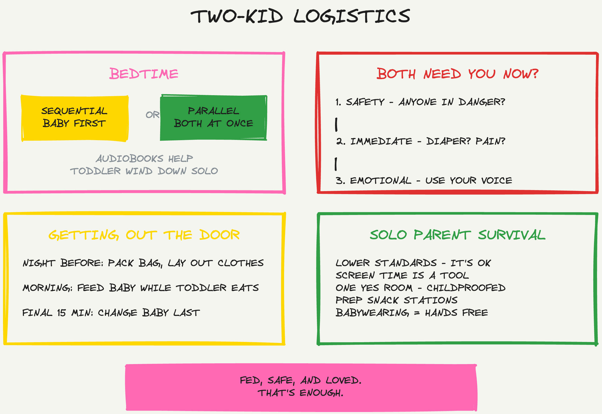
"Special time" with Ethan: Set a timer for 15 minutes. He picks the activity. You do nothing but engage with him. No phone. No baby. This fills his cup more than hours of distracted presence.
Milk coming in. Hormones crashing. Everything hurts. Baby sleeps a lot but wakes constantly. Ethan is confused. You will cry. Andrew will feel helpless. This is the hardest week.
Feeding is getting slightly more routine. You leave the house for the first time (pediatrician visit). Night/day confusion peaks. Ethan's behavior might get worse before better.
Baby slightly more alert. First social smiles might appear. You know what different cries mean. Ethan starts accepting baby's presence (or not). First growth spurt chaos.
Crying peaks around 6 weeks. Cluster feeding intensifies. You're exhausted. But: 6-week checkup clears you physically. Tiny light at end of tunnel.
Real smiles. More eye contact. Longer stretches of sleep emerging. Feeding becoming second nature. Family starting to feel like a unit of 4.
Baby's personality emerging. Routines actually working. Ethan adjusting. You remember you're a person, not just a milk machine. First laughs. You've got this.
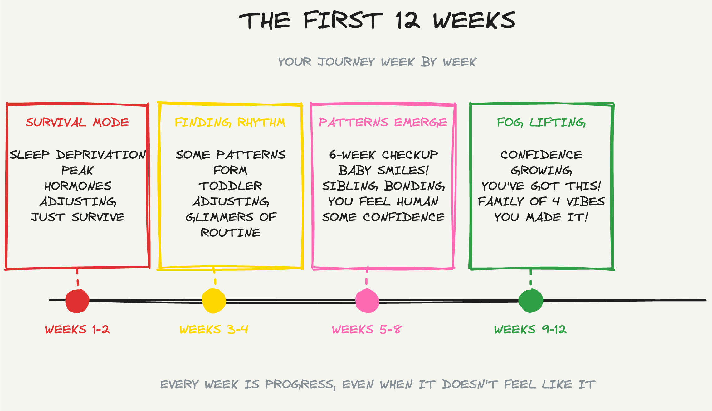
The reframe that helps: Surviving vs. Enduring. Surviving implies barely making it, white-knuckling through. Enduring means accepting difficulty as temporary without losing yourself in it. The fourth trimester is hard. But you're not just surviving — you're adapting.
Around 12 weeks, something shifts. The survival fog lifts. You start thinking beyond the next feeding cycle.
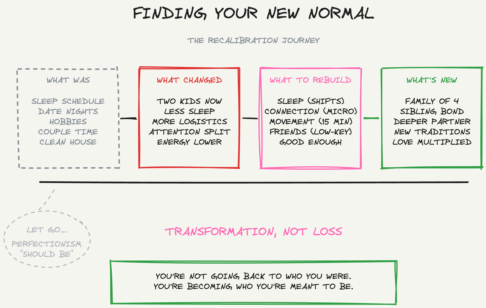
The first three months are called the "fourth trimester" for a reason. Baby is still becoming human. You're still becoming a family of four. It's supposed to be hard. And then it gets easier. It really does.
You did this once. You can do it again.
And this time, you know the punchline. 💕